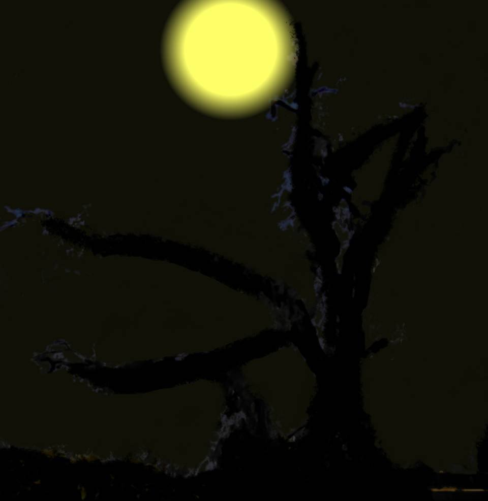

Script 000021C3
Leaving the underground storeroom, I headed for the storehouse.
In yesterday's translation, I would set down everything I had done today.
I would pass on to later generations what I had done, and how one could escape the threat of Shigatsu Youka.
On the way, I looked up at the cherry tree left standing at the Niimura main house.
In yesterday's translation, I would set down everything I had done today.
I would pass on to later generations what I had done, and how one could escape the threat of Shigatsu Youka.
On the way, I looked up at the cherry tree left standing at the Niimura main house.
"Ko-san...
This is right, isn't it?"

This is a part of Shigatsu Youka.
A part of the Goddess who has made her nest in the land of Arata.
It is because of this that the curse-killings happen, and people turn into cherry trees and vanish.
A part of the Goddess who has made her nest in the land of Arata.
It is because of this that the curse-killings happen, and people turn into cherry trees and vanish.
Since I came here, no one has disappeared.
Probably because Shigatsu Youka was wary of me.
Shigatsu Youka has intelligence.
To reproduce, it uses humans, manipulates them, and takes their lives.
Because I was there, aware of that possibility, Shigatsu Youka could make no great move.
Probably because Shigatsu Youka was wary of me.
Shigatsu Youka has intelligence.
To reproduce, it uses humans, manipulates them, and takes their lives.
Because I was there, aware of that possibility, Shigatsu Youka could make no great move.
But fortunately, after the deaths of Ko-san and his mother, I had given up my research on Droga.
If I had continued my research, my own life might have been in danger as well.
Yes, Ko-san and his mother were killed by Shigatsu Youka― I am certain of it.
But―
If I had continued my research, my own life might have been in danger as well.
Yes, Ko-san and his mother were killed by Shigatsu Youka― I am certain of it.
But―
"Ko-san...
Surely I do not have long either."
I had handed over many of the cherry trees to Shinozaki-san.
With that, Shigatsu Youka was brought all at once to the brink of destruction.
If its true nature became known, Droga would surely stop being used, and it would no longer be able to reproduce.
Yet if it killed me, my suspicious death would only make Shinozaki-san see it as all the more dangerous.
I had handed over many of the cherry trees to Shinozaki-san.
With that, Shigatsu Youka was brought all at once to the brink of destruction.
If its true nature became known, Droga would surely stop being used, and it would no longer be able to reproduce.
Yet if it killed me, my suspicious death would only make Shinozaki-san see it as all the more dangerous.
For these 6 years, I have managed to hold Shigatsu Youka's movements in check.
If Droga goes on unused like this, and there is falsificaso ready for when it is needed, our descendants can be protected from the threat of Shigatsu Youka.
If Droga goes on unused like this, and there is falsificaso ready for when it is needed, our descendants can be protected from the threat of Shigatsu Youka.
"Ko-san... I..."
Shigatsu Youka has already been checkmated.
It has lost its fruiting bodies, and the threat of Droga has become known―
Yes, Shigatsu Youka has nothing more to lose.
Even if it kills me, it has nothing left to lose.
Shigatsu Youka has already been checkmated.
It has lost its fruiting bodies, and the threat of Droga has become known―
Yes, Shigatsu Youka has nothing more to lose.
Even if it kills me, it has nothing left to lose.
So I felt regret.
That I had not written the rest of the translation sooner.
That I was walking this road alone.
And― that I had sensed its presence.
That I had not written the rest of the translation sooner.
That I was walking this road alone.
And― that I had sensed its presence.
"Kikyo"
 video: 111.wmv
video: 111.wmvI had been lost in thought for a moment when something brightly colored caught my eye.
 video: 111.wmv
video: 111.wmvThough it was still only February, cherry blossoms were dancing before my eyes.
At the same time, a voice I knew, one I had long missed.
At the same time, a voice I knew, one I had long missed.
video: 111.wmvShigatsu Youka was moving.
The air was far too freezing to call this out-of-season blooming.
As if to say, what of it, the cherry blossoms danced.
The air was far too freezing to call this out-of-season blooming.
As if to say, what of it, the cherry blossoms danced.
video: 111.wmv"Kikyo, it's been a while."
video: 111.wmvThere stood a young man.
The same figure as in my last memory of him.
Against the old woman I had become, a figure brimming with youth.
Yes, Ko-san had come for me.
The same figure as in my last memory of him.
Against the old woman I had become, a figure brimming with youth.
Yes, Ko-san had come for me.